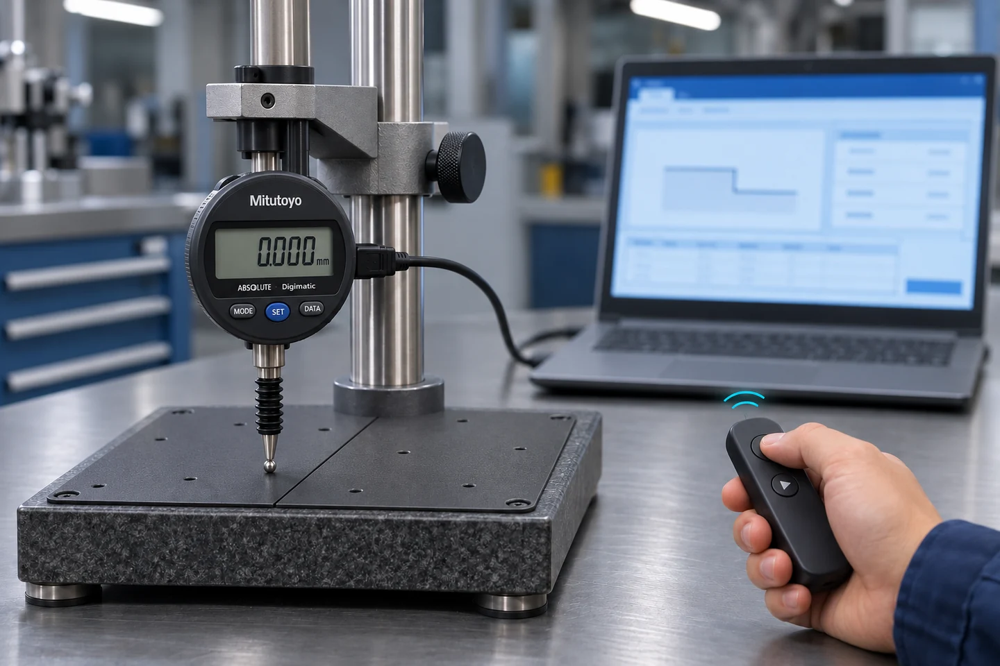
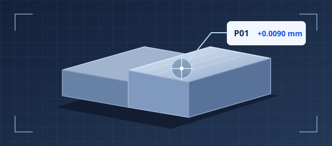
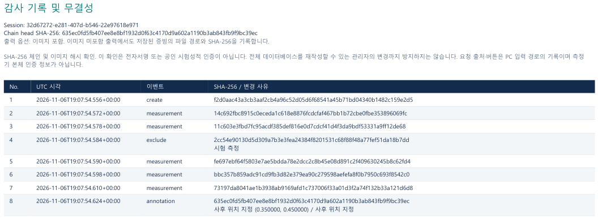

01 / 측정
측정기에 손대지 않고 기록
무선 리모컨으로 값을 수집해 측정기 버튼을 누를 때 생기는 흔들림을 줄입니다. 측정기 DATA 버튼으로도 수집합니다.
WORKFLOW
01 / 측정
무선 리모컨으로 값을 수집해 측정기 버튼을 누를 때 생기는 흔들림을 줄입니다. 측정기 DATA 버튼으로도 수집합니다.
02 / 판정
지정한 위치와 횟수대로 측정을 안내하고, 허용 범위에 따라 합격 여부를 판정합니다.
03 / 보고서
측정값, 판정 결과, 증빙 사진을 PDF·엑셀 보고서로 내보냅니다.
REMOTE CAPTURE
리모컨 버튼을 누르면 앱이 측정값을 받아 저장합니다. 측정기 버튼을 직접 누를 때 생기는 흔들림을 줄일 수 있습니다.


WEBCAM EVIDENCE
USB 웹캠을 연결하면 제품을 보면서 측정할 수 있습니다. 촬영한 사진을 측정값과 함께 저장하고, 사진 위에 측정 위치를 표시해 보고서에 첨부하세요.
RECORD INTEGRITY
측정 이벤트와 증빙 사진의 SHA-256 해시를 남깁니다. 원본 변경 검사를 켜면 보고서 발행 전에 기록과 사진을 저장된 해시와 대조합니다.

사용 중인 측정기와 검사 조건을 알려주세요.
기본 지원 장비 Mitutoyo(미쓰도요·미스도요) 543-700 + USB-ITN
PC에 연결할 수 있고 제조사가 드라이버를 제공하는 측정기도 연동을 검토합니다.
도입 문의로 제조사와 모델명, 드라이버 정보를 알려주시면 장비 발송 방법을 안내해 드립니다. 보내주신 측정기로 실제 측정값을 받아 본 뒤, 연동이 가능하면 앱에서 사용할 수 있도록 연결해 드립니다.